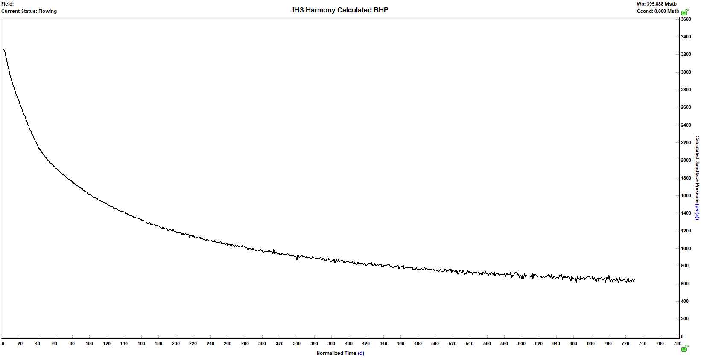

Similar tools
This package is intended as a free and flexible substitute for commercial tools, a few of which are outlined below. Please open an issue or submit a pull request for anything out of date.
Comparison
Due to its limited scope, PressureDrop.jl has a much lower memory & size footprint than other options.
| Software | Scriptable | Bulk calculation (multi-time) | Dynamic injection points | Dynamic temperature profiles | User extensible | Multi-core | Notes |
|---|---|---|---|---|---|---|---|
| IHS Harmony (Fekete RTA) | ❌ | ✔️ | ⚠️ through manual profiles | ⚠️ through manual profiles | ❌ | ❌ | |
| IHS Perform | ❌ | ❌ only as limited number of sensitivity cases | ❌ | ❌ | ❌ | ❌ | |
| Schlumberger PipeSim | ⚠️ Python SDK to interact with executable | ✔️ | ? | ? | ❌ | ❌ | Slow. |
| SNAP | ⚠️ via DLL interface exposed in VBA | ⚠️ no longer obviously maintained | ✔️ | ✔️ | ❌ | ❌ | Difficult to run advanced functionality on modern systems |
| Weatherford WellFlo | ❌ | ❌ | ✔️ | ❌ | ❌ | ❌ | |
| Weatherford ValCal | ❌ | ❌ | ✔️ | ❌ | ❌ | ||
| PetEx Prosper | ⚠️ through secondary interface | ✔️ | ? | ✔️ | ✔️ | ❌ | Allows significant scripting & extension via user DLLs. |
| PressureDrop.jl | ✔️ | ✔️ | ✔️ | ✔️ | ✔️ | ⚠️ Using Julia coroutines or composable threads in 1.3 |
Example
Here the bulk calculations example output is reproduced in Harmony (some minor differences are to be expected due to different fluid property correlations and less precision available in specifying wellbores in Harmony):

For comparison, the PressureDrop output: